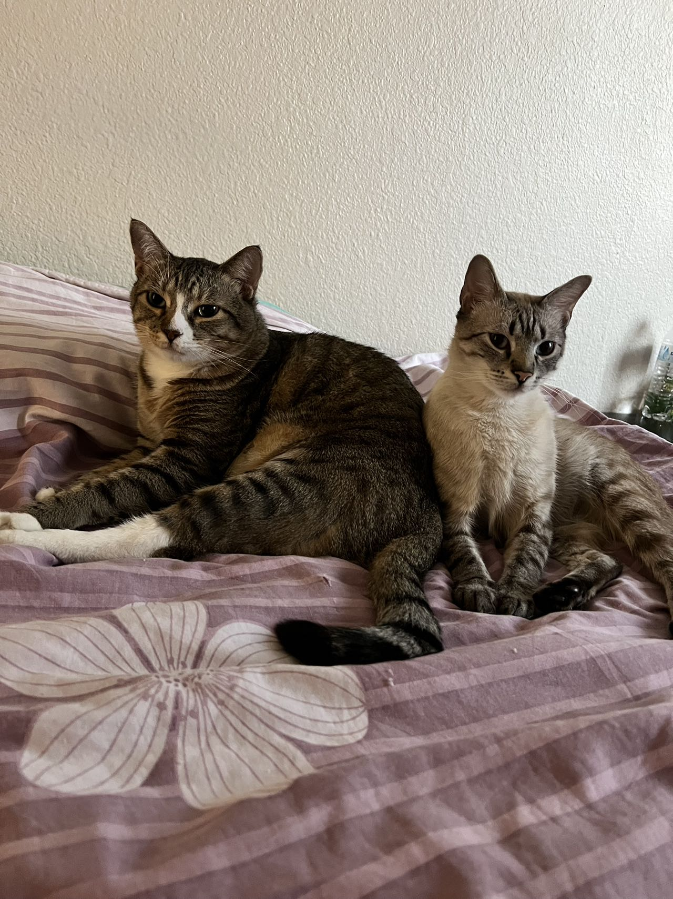
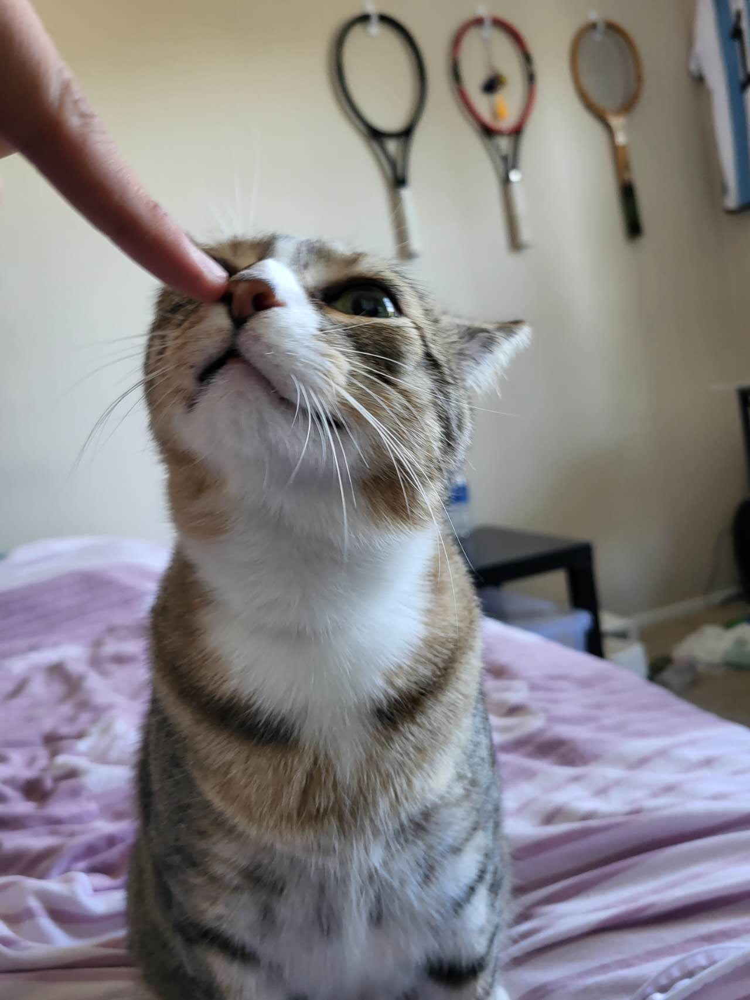
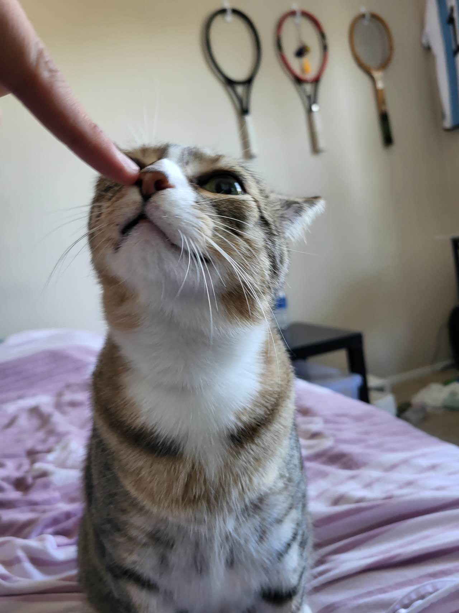
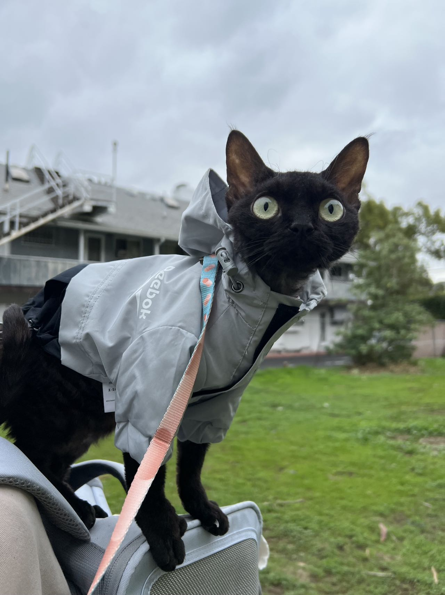
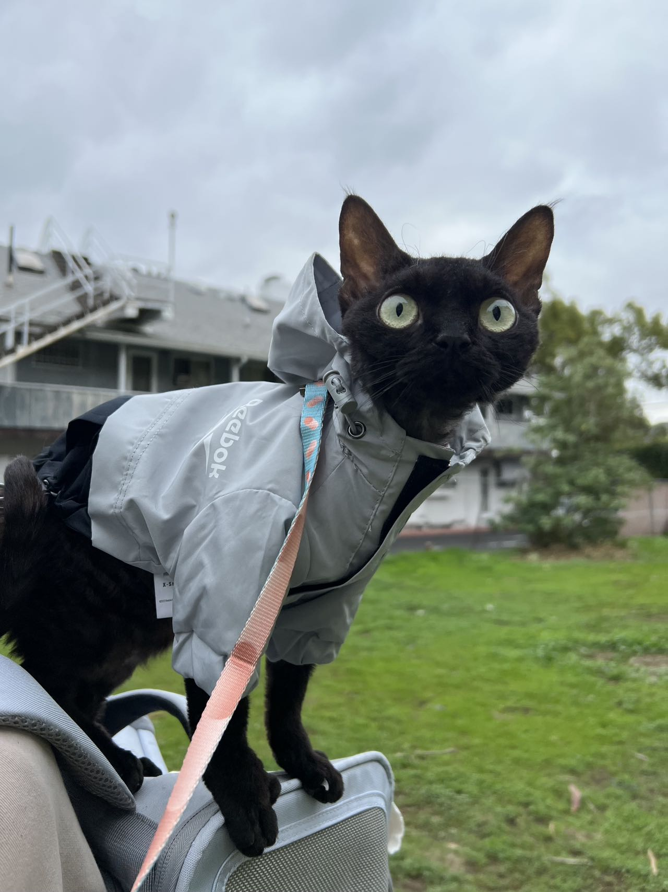
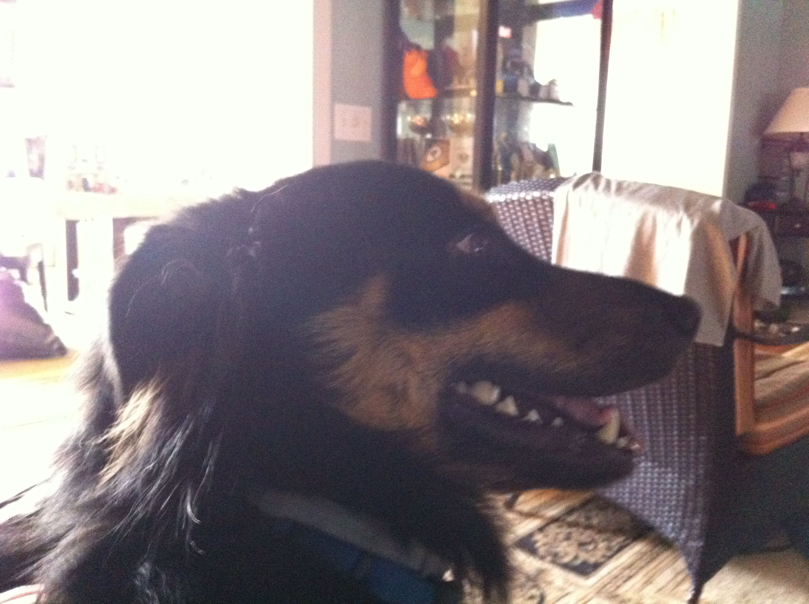
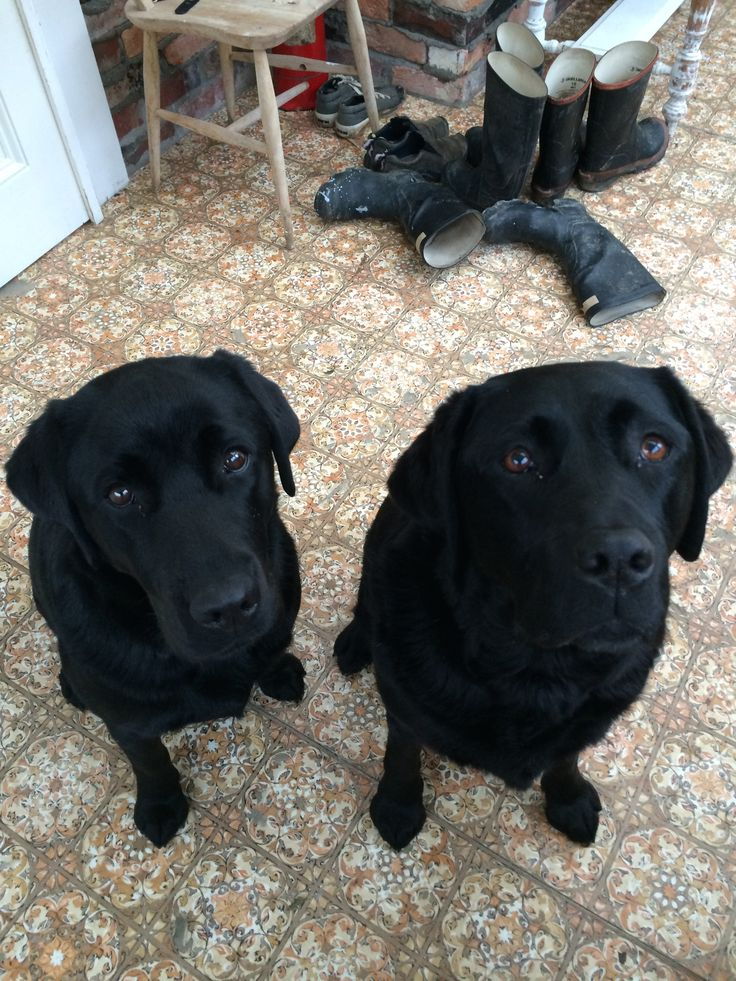
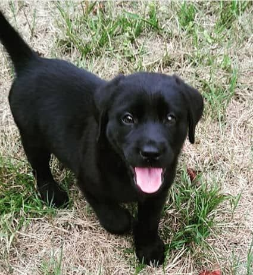

Choose Your Friends


My Pet- Sprout
Their synchronized purrs at dusk narrate tales of a deep friendship that is pure, unconditional, and beautifully serene illuminating their home with love and vibrancy.Naer is the energizing force, his infectious spirit bringing smiles and laughter as he explores every nook and cranny with ceaseless curiosity. Together, they are more than pets; they are family.
He enjoys playing together with his good friend--Naer.Sprout and Naer share a magical bond in their little kingdom, embodying a perfect blend of tranquility and playfulness.
Photo Gallery



 

Likes
- Egg
- Playing with Naer and my tennis string
- Sleeping in the sunshine
- Kai Liu and Mengkun
My Pet- Cody
Cody is a 7yr old Pembroke Corgi. He was born in Cavalier Farms, Seattle. He prefers to spend his days lounging on the bean bag. Every day, he enjoys two walks around the neighborhood and likes to make friends with other doggie friends. If lucky enough, he might see the cyclist, but he is not allowed to give chase. Cody loves traveling. He enjoys walking on the beach and taking sun naps. But he hates cold weather. He would like to stay at home lounging by the fireplace in winter.
Cody is a 7yr old Pembroke Corgi. He was born in Cavalier Farms, Seattle. He prefers to spend his days lounging on the bean bag. Every day, he enjoys two walks around the neighborhood and likes to make friends with other doggie friends. If lucky enough, he might see the cyclist, but he is not allowed to give chase. Cody loves traveling. He enjoys walking on the beach and taking sun naps. But he hates cold weather. He would like to stay at home lounging by the fireplace in winter.
Photo Gallery


Likes
- Swimming
- Running in the park
- Meeting new friends
My Pet- Santa
She has a fondness for toys, especially those that squeak. Whenever she hears the high-pitched sound, her ears perk up, and her tail wags with excitement. The joy in her eyes is undeniable as she pounces on the squeaky toy, tossing and turning it playfully..
For her, these toys are more than just playthings; they represent moments of pure happiness, a delightful escape from the mundane. Her love for them is a testament to her youthful spirit, always eager and full of zest.
Photo Gallery
 



Likes
- Playing fetch
- Sunny naps
- Tasty treats
- Exploring new places
My Pet- Peddie
Peddie, the Golden Retriever, is a charming and lively companion known for his beautiful coat and playful nature. He's a perfect partner for outdoor fun, loved for his loyalty and gentle disposition. Peddie's intelligence and friendly demeanor make him a beloved member of his family and a source of joy for everyone who knows him.
Peddie, the Golden Retriever, is a charming and lively companion known for his beautiful coat and playful nature. He's a perfect partner for outdoor fun, loved for his loyalty and gentle disposition. Peddie's intelligence and friendly demeanor make him a beloved member of his family and a source of joy for everyone who knows him.Photo Gallery


Likes
- Swimming
- Running in the park
- Meeting new friends
- Yiran Zheng
My Pet- Juno
Juno is a small black dog with a curious and adventurous spirit. His sparkling eyes are always on the lookout for new things to explore, whether it's a rustling leaf in the backyard or a new visitor at the door. Every walk with Juno turns into an adventure, with him darting towards every sound or movement, eager to uncover the mysteries of the world around him. His playful nature is infectious, and he has a way of making everyone around him smile with his antics. Despite his size, Juno has a heart full of courage, never hesitating to stand up for his loved ones or face challenges head-on. He truly embodies the saying, "It's not the size of the dog in the fight, but the size of the fight in the dog.".
Photo Gallery
  Likes
- Playing fetch
- Sunny naps
- Tasty treats
- Exploring new places